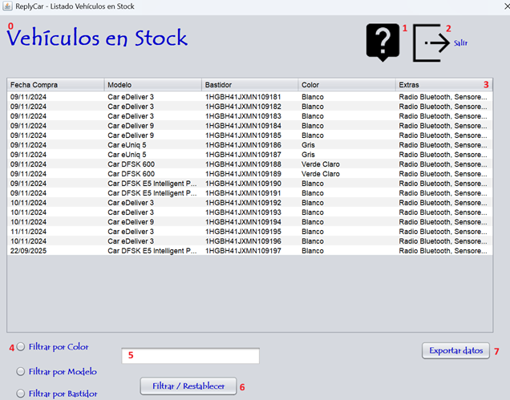

En este apartado podemos tener los datos de los vehículos que tenemos en stock para la venta, el listado se exporta y se entrega a los vendedores. Sigue las instrucciones de la fotografía para realizar el proceso correctamente. Para ver el listado y utilizarlo correctamente hay que seguir los datos que corresponden a la numeración expuesta en la fotografía. Vamos a proceder:

0 - Título de la pantalla, descripción de lo que significa la pantalla.
1 - Botón para proceder a leer la ayuda de la aplicación.
2 - Botón para salir de la aplicación.
3 - Listado de los vehículos que tenemos en stock para la venta.
4 - Botones de radio para filtrar la búsqueda.
5 - Ingresar el texto que quieres buscar.
6 - Botón para filtrar y restablecer la búsqueda.
7 - Exportar datos que hay en la tabla a EXCEL.
Nota: Pulsando F1 en la ventana principal, se abrirá esta página de ayuda.